data(iris)
d_matrix <- dist(iris[, -5], method = "euclidean")
result.h <- hclust(d_matrix, method = "ward.D2")
plot(result.h, main = "Hierarchical Clustering Dendrogram")
先の章では分散共分散行列(相関行列)に基づいた線型モデルを中心に紹介した。 しかし，多変量解析はそれだけではない。 むしろ測定モデルとして潜在変数を仮定する手法だけに固執するあまり，心理測定の仮定に違反するようなデータであっても因子分析を適用したり，モデルの適合度を優先しすぎて不自然な設定に走ったりするような誤用が多く見られる。
心理学においては因子分析が構成概念を測定していると「純粋に」信じられて多用されてきたが，かつてはさまざまな多変量解析技法が必要に応じて開発，使用されていたのである。 ここでは分析のスタートになる行列の種類で区分し，いくつかの多変量解析モデルを紹介する。
距離とは，次の四つの公理を満たす数字のことをいう。
距離行列とは行列の要素が距離を表しているもので，一般に正方・対称行列になる。この点は分散共分散行列や相関行列と同じで，この行列演算によって分散共分散を用いたモデルとは別の解釈が成立する分析を作ることができる。
ちなみにRでは距離行列を作るのにdist関数を用いる。オプションとして特段の指定がなければユークリッド距離が用いられるが，他にも以下のようなオプションがある。
"euclidean": ユークリッド距離。\(d(x,y) = \sqrt{\sum_{i=1}^N (x_i-y_i)^2}\)で表される。"maximum": チェビシェフ距離。\(d(x,y) = max(|x_i - y_i|)\)で表される。"manhattan": マンハッタン距離。\(d(x,y)=\sum (|x_i - y_i|)\)で表される。"canberra": キャンベラ距離。\(d(x,y) = \sum \frac{|x_i-y_i|}{|x_i+y_i|}\)で表される"binary": バイナリ距離。ジャッカード距離ともいう。0/1のデータに対する距離で，\(d(x,y) = \frac{b+c}{a+b+c+d}\)で表される(aは両方1，bはxが1でyが0，cはxが0でyが1，dは両方0)。両方に共通して1である要素が多いほど距離が小さくなる。"minkowski": ミンコフスキー距離。一般化された距離とも言われ，係数\(p\)でさまざまな距離を表現できる。\(d(x,y)=\left(\sum |x_i-y_i|^p\right)^{\frac{1}{p}}\)で表される。例えば\(p=1\)ならばマンハッタン距離，\(p=2\)ならユークリッド距離である。\(p=\infty\)の時を特にチェビシェフの距離，または優勢次元距離という。数字を何とみなすか，によって心理学でも距離データを扱うことはできる。 尺度評定の差分を(得点間の)距離とみなすこともできるし，相関係数も\(1.0-|r_{jk}|\)のようにすれば距離とみなすことができる。 社会心理学におけるソシオメトリックデータは，対人関係の選好評定だが，これも対人間の距離とみなすことができるだろう。 実験心理学における刺激の混同率や汎化勾配，2つの刺激が同じか違うかを判断する課題への反応潜時，刺激の代替価・連想価は類似性と考えられるから，これも距離データと言えるだろう(高根 1980)。 距離行列は一個体からの評定や反応からでも生成できるから，小サンプルの実験計画であっても距離行列を得ることができる。
このように，類似性あるいは非類似性を距離と見做して用いることができる。 この利点は，回答者の自然な判断に任せられること，つまり「総合的に判断して，似ているか，似ていないか」といった回答をデータにできることである。研究者はついつい複数の類似した項目で多角的に聞かねばならない，と思いがちだが，下位の評定次元を実験者が準備することは回答者の自由度を束縛している側面もあり，また回答者の負担を考えると必ずしもいいことばかりではない。さらに項目によっては社会的な望ましさバイアスなども含まれるから，「総合的に評価してもらいたい」というのはそういったバイアスから逃れられる側面もある。
距離を対象に考える多変量解析モデルも，そのほかのモデルと同様，要約や分類を目的にしている。また，多次元データを少数の次元に要約するために可視化する手法として用いられることもある。まずは分類を目的としたモデルから見ていこう。
クラスター分析は類似したものをまとめてクラスター(塊)を形成する分析方法である。 クラスター分析の中でも多くの手法・モデルが考えられており，いくつかの側面から分類することができる。
まずはクラスターが階層性を持つかどうか。階層的クラスター分析は距離の短いものから順にまとめていき，クラスターのクラスター，クラスターのクラスターのクラスター，といったように順次大きなグループにまとめ上げていく。
結果はデンドログラムと呼ばれるツリー状のプロットで表されることが一般的で，適当なところで分割して利用する。適切なクラスター数に関する一般的な基準はほとんどなく，実用性に応じてツリーをカットすることが多い。
irisデータによる実行例を示す。
data(iris)
d_matrix <- dist(iris[, -5], method = "euclidean")
result.h <- hclust(d_matrix, method = "ward.D2")
plot(result.h, main = "Hierarchical Clustering Dendrogram")
階層的クラスター分析のクラスター同士を上位クラスターにまとめていく方法がいくつか考案されており，Rではhclust関数のmethodオプションで指定することができる。
"ward.D" / "ward.D2": ウォード法。クラスター内の分散を最小化する"single": 最短距離法。クラスター間の最短距離でリンク"complete": 最長距離法。クラスター間の最長距離でリンク"average": 平均法(群平均法)。クラスター間の平均距離でリンク"mcquitty": McQuitty法。重み付き群平均法の一種"median": メディアン法。重み付き群中心法の一種"centroid": 重心法。最もよく使われるのがウォード法で，実践的にもこの手法による分類が最も解釈しやすい。なお，ward.Dオプションはバグがあるので用いないことが望ましく，バグを修正したward.D2を用いること1。
得られたクラスターの結果はcutree関数で任意のクラスター数に分割できる。今回，irisデータは3種類のirisがあることがわかっているので，クラスター数3にしてその分類精度を確認してみよう。
clusters <- cutree(result.h, k = 3)
table(clusters, iris$Species)
clusters setosa versicolor virginica
1 50 0 0
2 0 49 15
3 0 1 35非階層的クラスター分析として有名なのは，k-means法による分類である。アルゴリズムは次のとおりである。
この方法は任意のクラス数に分類できること，大規模なデータであっても比較的早く収束することが利点である。 Rによるサンプルは以下のとおりである。
result.k <- kmeans(d_matrix, centers = 3)
table(result.k$cluster, iris$Species)
setosa versicolor virginica
1 0 49 13
2 0 1 37
3 50 0 0ここまでのクラスタリングは，各個体がどのクラスターに所属するかが明確に定まっていたが，境界がそこまで明確でない中間的なデータ点もあるかもしれない。各データ点が1つのクラスターにのみ所属するという明確なクラスタリングのことを，ハードクラスタリングとかクリスプクラスタリングという。これに対して，各データ点が複数のクラスターに部分的に所属している，あるいは所属度が例えば0-1などの連続値で表現されるような，緩やかな所属をゆるするクラスタリングもあり，これらを総称してファジィクラスタリングとかソフトクラスタリングと呼ぶ。
ファジィクラスタリングの例として，fuzzy c-means法を挙げる。
pacman::p_load(e1071)
result.c <- cmeans(d_matrix, centers = 3, m = 2)
head(result.c$membership) 1 2 3
1 0.001506518 0.002333847 0.9961596
2 0.002257792 0.003508811 0.9942334
3 0.004265036 0.006430897 0.9893041
4 0.003275399 0.005065198 0.9916594
5 0.001606853 0.002468265 0.9959249
6 0.009344908 0.015286052 0.9753690table(result.c$cluster, iris$Species)
setosa versicolor virginica
1 0 2 37
2 0 48 13
3 50 0 0fuzzy c-meansはe1071パッケージに含まれている。 モデルの指定の時に，ファジィ度パラメータmを指定する。通常1.5から3程度で，大きいほど曖昧さをゆるす。 出力としてmembershipという所属確率が返される。この所属確率が最大のものをハードな分類として使用することができる。
membershipをプロットしてみると，明らかに所属するクラスが明確なものと，曖昧なデータもあることがわかる。 心理学的応用としては，パーソナリティの分類や症状の分類などが考えられるだろう。

階層的クラスタリングや，k-means, fuzzy c-meansの非階層的クラスタリングモデルでは，クラスター数の決定について客観的な指標がなかった。そこで，確率モデルとしてクラスター分析を考え，モデル適合度の観点から評価することを考える。
ある変数についてヒストグラムを描き，次のような出力を得たとしよう。
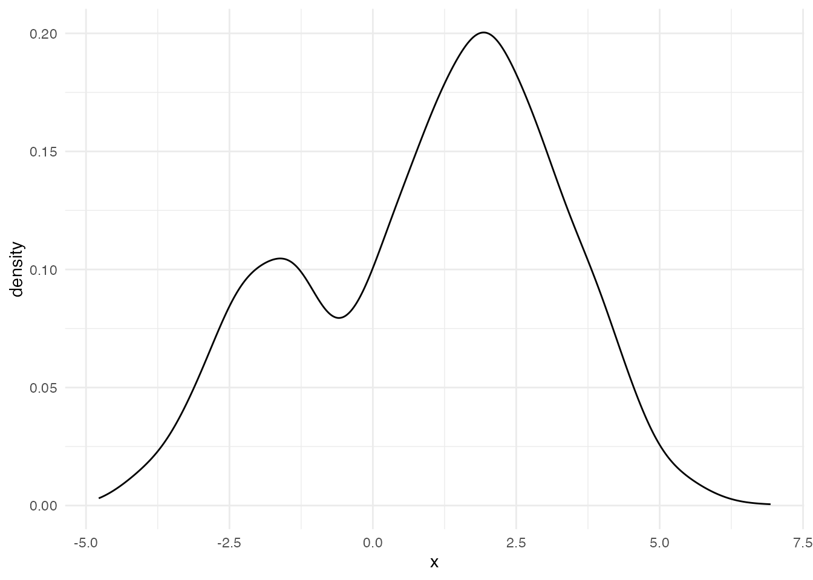
このようなデータに対して，正規分布モデルを当てはめるのは適切だろうか。 正規分布は単峰で左右対称であることが特徴だから，無理やり当てはめるとおかしなことになるだろう。 ここには隠れた二つの正規分布があると考え，それぞれが混ざり合って出てきたものと考えたほうが良い。
Warning: Using `size` aesthetic for lines was deprecated in ggplot2 3.4.0.
ℹ Please use `linewidth` instead.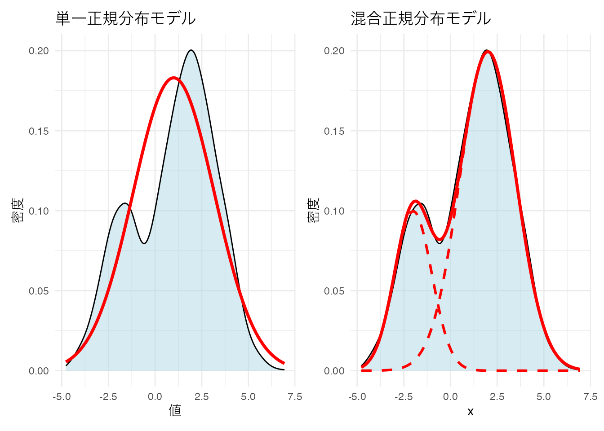
統計モデルとしては，混合正規分布モデル(Gaussian Mixture Model, GMM)と呼ばれるのだが，これは異なる2つの群を生成モデルとしているクラスター分析であると考えることもできる。GMMでは観測されたデータが複数の正規分布を含んでいると考え，各群に想定される正規分布の平均，分散および群の混合率を推定することでデータの潜在的な特徴を明らかにする。今回は簡便のために1変数でのモデルにしたが，複数の変数がある場合は多変量正規分布で考えることになる。
確率モデルになっているので，尤度を用いてデータとの適合度を計算することができる。潜在的な分布がいくつあるのかをBICなどを基準に選定することで，客観的にクラス数を決定することができるのが利点である。
パッケージを使って具体的なデータを分類してみよう。
pacman::p_load(mclust)
# irisデータから数値変数のみを取得
iris_data <- iris[, 1:4]
# mclustによるクラスタリング
gmm_result <- Mclust(iris_data)
# 結果の表示
summary(gmm_result, parameters = TRUE)----------------------------------------------------
Gaussian finite mixture model fitted by EM algorithm
----------------------------------------------------
Mclust VEV (ellipsoidal, equal shape) model with 2 components:
log-likelihood n df BIC ICL
-215.726 150 26 -561.7285 -561.7289
Clustering table:
1 2
50 100
Mixing probabilities:
1 2
0.3333319 0.6666681
Means:
[,1] [,2]
Sepal.Length 5.0060022 6.261996
Sepal.Width 3.4280049 2.871999
Petal.Length 1.4620007 4.905992
Petal.Width 0.2459998 1.675997
Variances:
[,,1]
Sepal.Length Sepal.Width Petal.Length Petal.Width
Sepal.Length 0.15065114 0.13080115 0.02084463 0.01309107
Sepal.Width 0.13080115 0.17604529 0.01603245 0.01221458
Petal.Length 0.02084463 0.01603245 0.02808260 0.00601568
Petal.Width 0.01309107 0.01221458 0.00601568 0.01042365
[,,2]
Sepal.Length Sepal.Width Petal.Length Petal.Width
Sepal.Length 0.4000438 0.10865444 0.3994018 0.14368256
Sepal.Width 0.1086544 0.10928077 0.1238904 0.07284384
Petal.Length 0.3994018 0.12389040 0.6109024 0.25738990
Petal.Width 0.1436826 0.07284384 0.2573899 0.16808182# 分類結果の可視化
plot(gmm_result, what = "classification")
# 真の種と比較
table(iris$Species, gmm_result$classification)
1 2
setosa 50 0
versicolor 0 50
virginica 0 50# BICによるモデル選択結果
plot(gmm_result, what = "BIC")
mclustでは，各クラスターの共分散行列の構造によって異なるモデルが考慮される。モデル名は3文字のコードで表現され，それぞれの文字が以下の意味を持つ：
E = Equal(等しい)V = Variable(異なる)E = Equal(等しい)V = Variable(異なる)E = Equal(等しい)V = Variable(異なる)I = Identity(単位行列，球形)例えば： - EII: 全クラスターが同じ大きさの球形(等分散球形) - VII: 各クラスターが異なる大きさの球形(異分散球形) - EEE: 全クラスターが同じ大きさ・形状・向きの楕円 - VVV: 各クラスターが異なる大きさ・形状・向きの楕円(最も一般的)
これらの組み合わせにより，14種類の共分散構造から最適モデルをBICを参考に自動的に選定される。今回はVEV (ellipsoidal, equal shape)の2クラスターモデルが最適として判断された(実際は3種あるが，データからは2種類が最適と判断されている)。
潜在的に分類する手法は，例えばマーケティング業界では購買層を探索的に見出す手法として使われる。潜在的なクラスが順序尺度水準であることを想定すれば，潜在ランクモデルと呼ばれ，テスト理論の応用モデルとして提案されている。Shojima (2022) ではIRTのような精緻な\(\theta_i\)の推定よりも段階的な推定の方が実践的意義が高いことから，潜在ランクモデルを活用する利点が論じられている。
Cattelのデータキューブのところで触れたように，Observation \(\times\) Variablesのデータセットがあったとき，変数の共変動から個人を分類することも，個人の共変動から変数を分類することもできる。そしてまた，両者を同時に分類するバイクラスタリング(Biclustering)という手法も提案されている。
BiclusteringはTwo-Mode Clusteringとも呼ばれ，様々なモデルが提案されているが，ここでは Shojima (2022) のテスト理論の観点から見てみよう。
テスト理論はデータがバイナリであり，この分析の確率モデルとしてはベルヌーイ分布を置いたIRTが一般的である。しかし上で述べたように，IRTで推定されるような潜在得点\(\theta\)の精度は実質的な意味が見えにくいことがある。すなわち，\(\theta\)が\(0.01\)ポイント違うことが，どのような違いに相当するのか。\(\theta\)を\(0.5\)ポイント上昇させるために受検者はどのような努力をすれば良いのか。また実用上も，数段階の診断結果や，単純な合否の2段階に分割してのフィードバックをするのであれば，そこまで細かい分類は必要ないかもしれない。
Shojima (2022) のバイクラスタリングでは，テストデータにおける項目を複数のフィールドに，受検者を複数のクラスに分類する。受験者の分類は正答率に応じて順序づけることができ，ランクとして表現することができる(ランクで表現されるモデルは特にランクラスタリングとよばれる)。
荘島のバイクラスタリングモデルを形式化するために，主要な行列を定義しよう。\(J\)を項目数，\(S\)を受検者数，\(C\)を潜在クラス/ランク数，\(F\)を潜在フィールド数とする。
バイクラスター参照行列\(\boldsymbol{\Pi}_B\)は次のように定義される：
\[ \boldsymbol{\Pi}_B=\left[\begin{array}{ccc} \pi_{11} & \cdots & \pi_{1F} \\ \vdots & \ddots & \vdots \\ \pi_{C1} & \cdots & \pi_{CF} \end{array}\right]=\left\{\pi_{fc}\right\} \]
ここで各要素\(\pi_{fc}\)は，クラス/ランク\(c\)の受検者がフィールド\(f\)の項目に正答する確率を表す。
クラス所属行列\(\mathbf{M}_C\)とフィールド所属行列\(\mathbf{M}_F\)は次のように定義される：
\[ \mathbf{M}_C=\left[\begin{array}{ccc} m_{11} & \cdots & m_{1C} \\ \vdots & \ddots & \vdots \\ m_{S1} & \cdots & m_{SC} \end{array}\right], \quad \mathbf{M}_F=\left[\begin{array}{ccc} m_{11} & \cdots & m_{1F} \\ \vdots & \ddots & \vdots \\ m_{J1} & \cdots & m_{JF} \end{array}\right] \]
ランククラスタリングにおけるランク所属行列\(\mathbf{M}_R\)は，クラス所属行列\(\mathbf{M}_C\)に，前後のクラスのつながりを緩やかに繋げるフィルター行列\(\mathbf{F}\)をかけることで得られる。
\[ \mathbf{M}_R = \mathbf{M}_C \mathbf{F} \]
フィルタ行列は，例えばランク数が6の場合，次のような行列になる。 \[ \mathbf{F}=\left[\begin{array}{rrrrrrr} 0.864 & 0.120 & & & & & \\ 0.136 & 0.760 & 0.120 & & & & \\ & 0.120 & 0.760 & 0.120 & & & \\ & & 0.120 & 0.760 & 0.120 & & \\ & & & 0.120 & 0.760 & 0.120 & \\ & & & & 0.120 & 0.760 & 0.136 \\ & & & & & 0.120 & 0.864 \\ \end{array}\right] \]
これらを踏まえて，尤度関数は次のように定義され，EMアルゴリズムによって推定される。
\[ l(\mathbf{U}\mid \boldsymbol{\Pi}_B) = \prod_{s=1}^S\prod_{j=1}^J\prod_{f=1}^F\prod_{c=1}^C \left(\pi_{fc}^{u_{sj}} (1-\pi_{fc})^{1-u_{sj}}\right)^{z_{sj} m_{sc} m_{jf}} \]
これを実装したパッケージexametrikaとそのサンプルコードをみて，実践例を見てみよう。
pacman::p_load(exametrika)
result.Ranklustering <- Biclustering(J35S515,
nfld = 5, ncls = 6,
method = "R", verbose = F
)
plot(result.Ranklustering, type = "Array")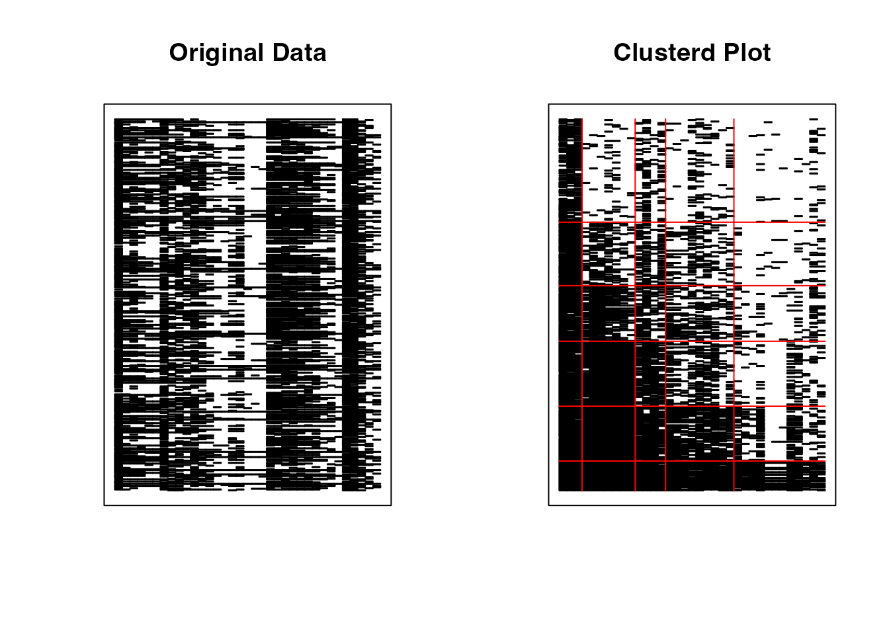
exametrikaパッケージのバイクラスタリングは，引数にデータ，フィールド数nfld，クラス(ランク)数ncls，および手法(Bならバイクラスタリング，Rならランクラスタリング)をとる。 ここではパッケージに含まれているサンプルデータJ35S515を使っているが，これは35項目からなるテストで515人の受検者からの回答を得たものである。
分析結果としてアレイプロットが示されている。この図の左は，行ごとに受検者，列ごとに項目からなり，正答を黒い四角(■)，誤答を白い四角(□)で表現したローデータである。右に示されているのは分析結果による同様の表示で，ランクごと，フィールドごとに類似したパターンがまとめられていることがわかる。
フィールドの分類とランクをみることで，受検者には次のランクに進むにはどの領域の項目に正答すれば良いか，といった情報を提供することができる。また，フィールドやランクへの所属は確率で表現され(ファジィクラスタリング)，受検者にはランクアップOdds, ランクダウンOddsを提供することができる。
フィールド所属行列，ランク所属行列を可視化したプロファイルの出力を以下に示す。
plot(result.Ranklustering, type = "FRP", nc = 2, nr = 3)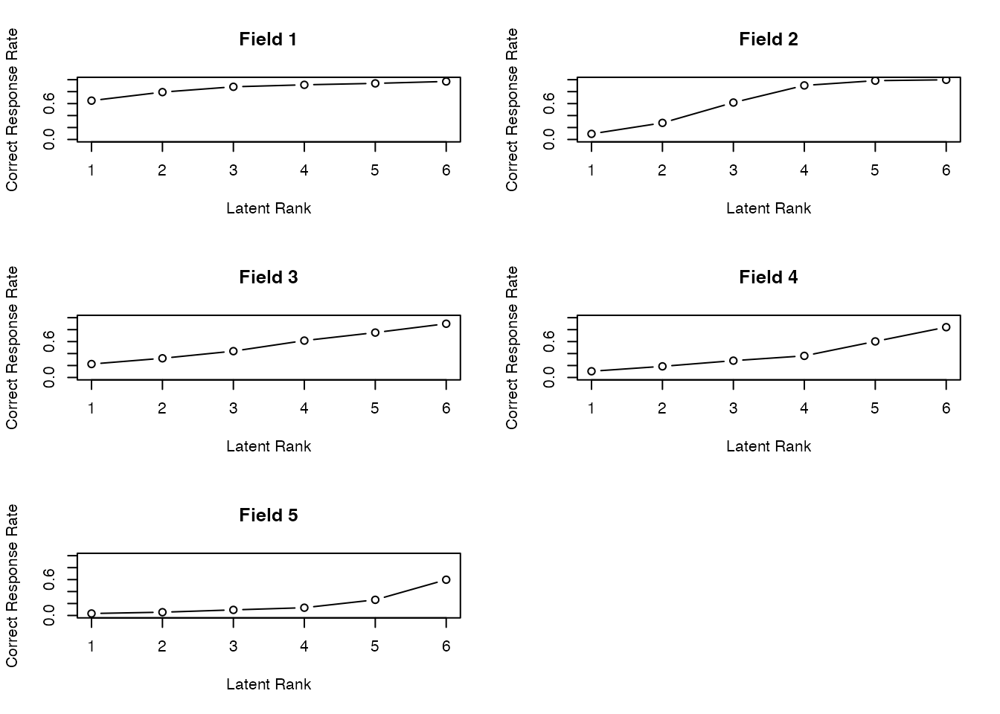
plot(result.Ranklustering, type = "RMP", students = 1:9, nc = 3, nr = 3)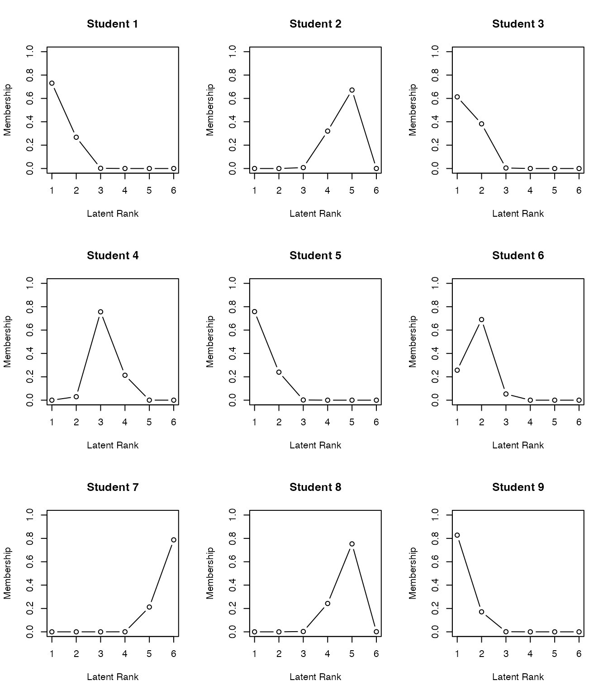
バイクラスタリングは多値モデルも開発されており，心理尺度の新しい分析手法として期待されている。というのも，クラスタリングは表層的な反応パターンによる分類で，因子分析法やIRT(GRM)のようなデータ生成メカニズムを仮定しないことから，潜在変数の意味解釈といった理論的問題を避けることができるからである。また，項目についてのクラスタリングは得点もしくは変化得点を質的な意味に割り当てることが容易であることもその理由として挙げられる。
なお，パッケージexametrikaには Shojima (2022) に含まれる12のモデル全てを実装している。詳しくはサイトを参照のこと。
多次元尺度構成法(Multidimensional Scaling,MDS)は，一言で言えば距離行列から地図を復元する手法である。 MDSは大きく分けて計量(metric)MDSと非計量(non-metric)MDSがある。前者は距離行列の固有値分解から得られる固有ベクトルを座標とみなす，ストレートな表現方法であり，データが比率尺度水準以上の誤差のない数値であることが求められる。これによって， どうしてそのような解釈が可能なのかについては，Young-Householderの定理というMDSの基礎になった数学定理があるので，興味がある人は調べて見てほしい。
以下に計量MDSの例を見てみよう。Rはeurodistというヨーロッパ各都市の距離についてのサンプルデータを持っており，これを使って基本関数cmdscaleでMDSを実行してみよう。
result <- cmdscale(eurodist, k = 2)
# 美しいプロットの作成
plot(result[, 1], result[, 2],
type = "n", # 点は描かずにプロット領域だけ作成
xlab = "次元1", ylab = "次元2",
main = "ヨーロッパ都市間の多次元尺度構成法",
cex.main = 1.2,
cex.lab = 1.1
)
# 都市名をラベルとして表示
text(result[, 1], result[, 2],
labels = rownames(result),
cex = 0.8,
col = "darkblue",
font = 2
)
# グリッドを追加
grid(lty = 2, col = "lightgray")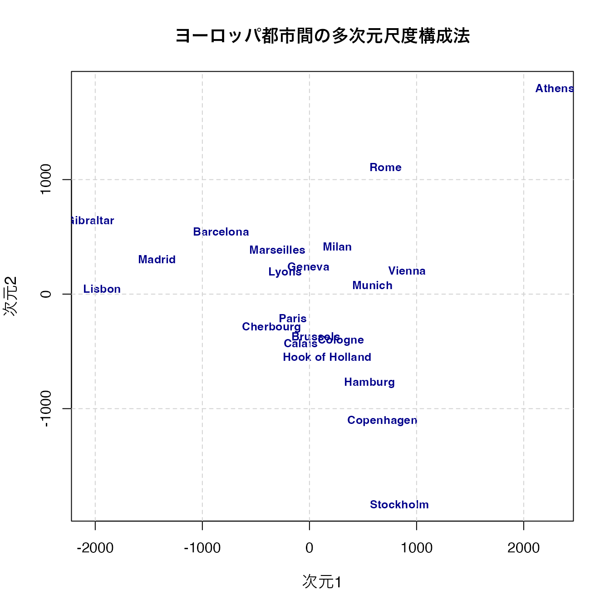
アテネ(Athens)が右上，ストックホルム(Stockholm)が下に来ていることから，南北が反転していると思われるが，それぞれの相対的な位置は大体復元できていることがわかるだろう。関数cmdscaleは引数kで次元数を指定でき，今回は2次元を指定したが，実際は地球が球体だからk=3とすることが正しいが，事前知識がない場合は可視化のために低次元を指定することが一般的である。
eudodistは実際の距離データであるから，比率尺度水準の誤差のないデータと見做せるだろう。しかし，心理学的な応用場面においては，比率尺度水準のデータや誤差のないデータは考えにくい。このとき用いられるのが，非計量MDSである。これを簡単に言えば，データの持つ大小関係を反映した多次元空間に対象を付置する(地図の座標を与える)ものである。すなわち，対象\(i\)と\(j\)の距離を\(d_{ij}\)と表すとすると， \[ d_{ij} < d_{kl} \to \delta_{ij} < \delta_{kl} \]
という関係が保持されるような座標\(\delta_{ij}\)を求めるものである。非計量MDSのはしりであったKruscalの方法は，データとの適合を表すstress値として， \[ \sum_{i>j} e_{ij}^2 = \sum_{ij} (\delta_{ij}-d_{ij})^2 \]
という最適化関数を最小化するように座標を求める。最適化関数は多くの研究者によって様々に提唱されており，Rでは便利なパッケージsmacofのアルゴリズム(Scaling by Majorizing a COmplicated Function)による実行がいいだろう。
実例で見てみよう。smacofパッケージの持つFaceExpデータセットを用いる。これは顔表情の類似度評定データで、異なる表情間の知覚的類似性を測定したものである。
pacman::p_load(smacof)
# 次元数2から10でストレス値を計算
dimensions <- 2:10
stress_values <- numeric(length(dimensions))
for (i in seq_along(dimensions)) {
result_temp <- mds(FaceExp, ndim = dimensions[i], type = "ordinal")
stress_values[i] <- result_temp$stress
}
stress_values[1] 0.106248100 0.059778016 0.035605225 0.019262481 0.011722294 0.007084647
[7] 0.007084647 0.007084647 0.007084647# ストレス値のプロット
plot(dimensions, stress_values,
type = "b", pch = 16,
xlab = "次元数", ylab = "ストレス値",
main = "次元数とストレス値の関係（顔表情データ）",
cex.main = 1.1,
cex.lab = 1.0,
col = "blue", lwd = 2
)
grid(lty = 2, col = "lightgray")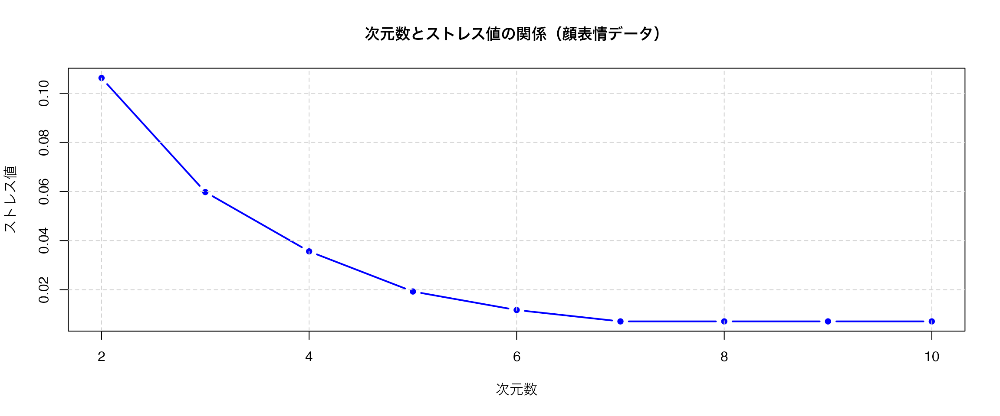
ここでは次元数を様々に変えて，適合度指標であるストレス値を得てプロットしている。一般的に，ストレス値が0.05以下なら優秀，0.1以下なら良好，0.2以下なら普通とされる。
プロットや値を見てみると，3次元でも十分な解が得られそうだ。改めて3次元であることを指定して分析し，プロットしてみよう。なお，mds関数のtype引数に順序尺度水準であることを明記することで，適切な分析が行われる。
# 3次元でのMDS結果
result <- mds(FaceExp, ndim = 3, type = "ordinal")
result
Call:
mds(delta = FaceExp, ndim = 3, type = "ordinal")
Model: Symmetric SMACOF
Number of objects: 13
Stress-1 value: 0.06
Number of iterations: 73 # 3次元MDSの可視化（3つの2次元プロット）
# 次元1 vs 次元2
plot(result$conf[, 1], result$conf[, 2],
type = "n",
xlab = "次元1", ylab = "次元2",
main = paste("次元1 vs 次元2\nStress =", round(result$stress, 3)),
cex.main = 1.0,
cex.lab = 0.9
)
text(result$conf[, 1], result$conf[, 2],
labels = rownames(result$conf),
cex = 0.7,
col = "darkblue",
font = 2
)
grid(lty = 2, col = "lightgray")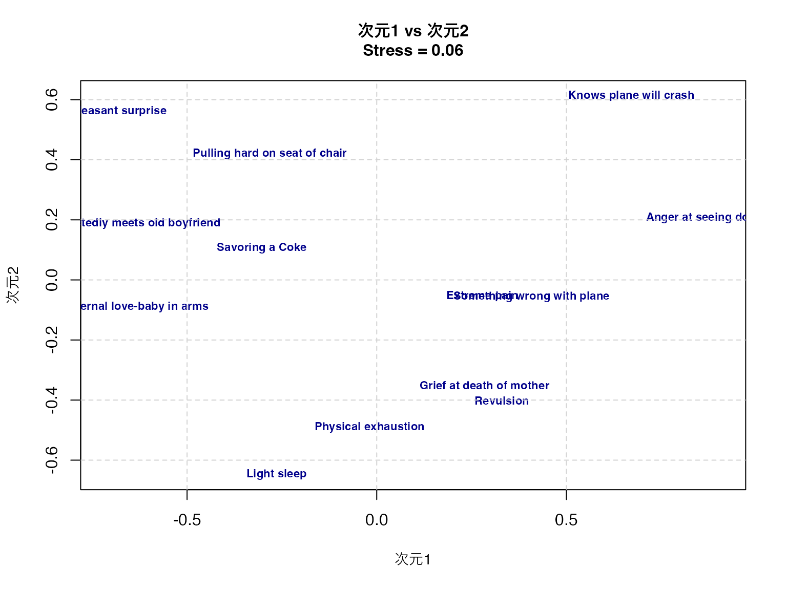
# 次元1 vs 次元3
plot(result$conf[, 1], result$conf[, 3],
type = "n",
xlab = "次元1", ylab = "次元3",
main = paste("次元1 vs 次元3\nStress =", round(result$stress, 3)),
cex.main = 1.0,
cex.lab = 0.9
)
text(result$conf[, 1], result$conf[, 3],
labels = rownames(result$conf),
cex = 0.7,
col = "darkblue",
font = 2
)
grid(lty = 2, col = "lightgray")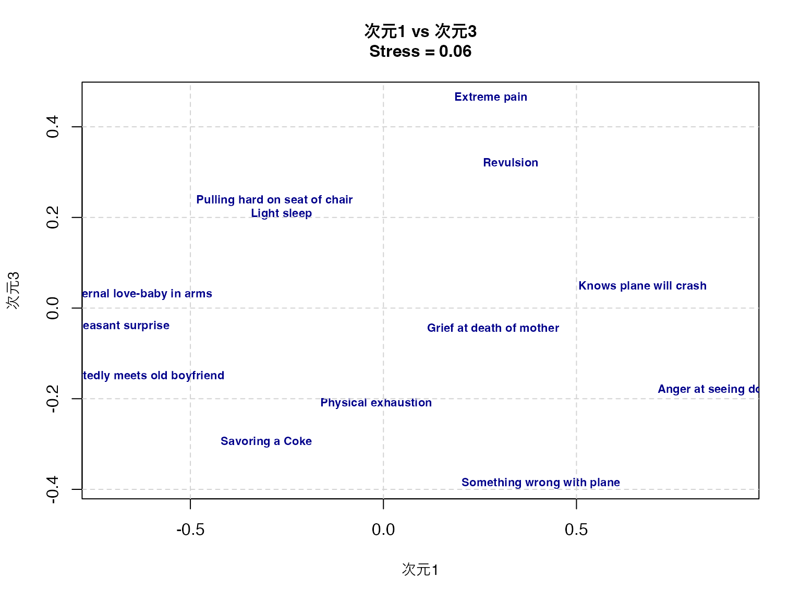
# 次元2 vs 次元3
plot(result$conf[, 2], result$conf[, 3],
type = "n",
xlab = "次元2", ylab = "次元3",
main = paste("次元2 vs 次元3\nStress =", round(result$stress, 3)),
cex.main = 1.0,
cex.lab = 0.9
)
text(result$conf[, 2], result$conf[, 3],
labels = rownames(result$conf),
cex = 0.7,
col = "darkblue",
font = 2
)
grid(lty = 2, col = "lightgray")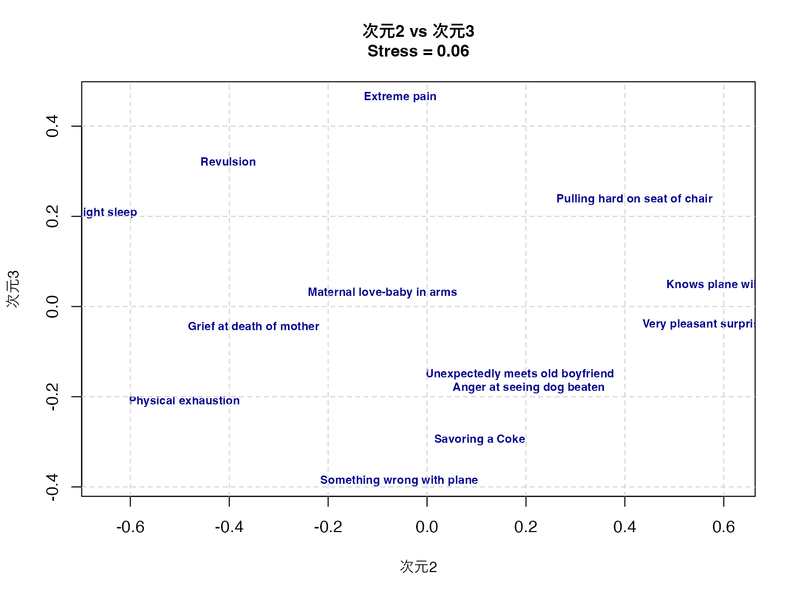
print(result$conf) D1 D2 D3
Grief at death of mother 0.28389211 -0.35088341 -0.04383041
Savoring a Coke -0.30306573 0.10620276 -0.29595552
Very pleasant surprise -0.71552867 0.56031573 -0.04008618
Maternal love-baby in arms -0.63827700 -0.09006026 0.02975313
Physical exhaustion -0.01879485 -0.49089080 -0.21059225
Something wrong with plane 0.40829233 -0.05617713 -0.38685372
Anger at seeing dog beaten 0.90768476 0.20575384 -0.18027858
Pulling hard on seat of chair -0.28180980 0.41937543 0.23764181
Unexpectedly meets old boyfriend -0.65807066 0.18760808 -0.15097801
Revulsion 0.32995517 -0.40195569 0.32170945
Extreme pain 0.27856073 -0.05436048 0.46450844
Knows plane will crash 0.67130146 0.61301964 0.04768550
Light sleep -0.26413984 -0.64794771 0.20727634このプロットから，顔表情間の知覚的類似性の構造を読み取ることができる。第一次元は快不快（valence）、第二次元は覚醒度（arousal）、第三次元は自然性（naturalness）を表していると解釈できる。
より客観的な命名がしたい場合，座標と外部変数との相関などを求めて考える。相関係数はベクトルの角度に基づく\(\cos(\theta)\)であり，軸上に外部変数の補助線を引くなどすればわかりやすい。こうした方法については， グリム and ヤーノルド ([1994] 2016) に詳しい。
続いて共頻行列に基づく分析について考えてみよう。 共頻行列とはカテゴリカルなデータのクロス表であり，カテゴリが同時に生起していることを表す。このことが当該カテゴリの近さを表す共変量だとして分析を行う。
カテゴリカルなデータであるから，応用範囲は広い。よく知られているのがテキストマイニングにおける応用例である。
テキストマイニングとは自然言語データを統計的に処理するための，一連の技法の名称である。小説やWeb上の記事，自由記述回答や逐語録など自由に書かれた自然言語表現を統計的に処理し，そこから意味のある知見を引き出す。
日本語のテキストマイニングは，基本的に形態素解析＋多変量解析の技術の総称であると言える。日本語は英語をはじめとする単語で分かち書きされる文章とは違い，一連の文字列から品詞ごとに文章を区分する必要がある。この文章から品詞の切り分け，活用前の原型を抽出するなどの操作を形態素解析という。形態素解析には日本語辞書に基づく形態素解析エンジンが必要で，MECABやJANOME，ChaSenなどが知られている。これらをRやPythonで扱うためのパッケージも存在する。
形態素解析によって，文章の中に当該単語が何回出現したかを表す文書単語行列を作成する。これは一般に，単語の数が非常に多くなるから疎な矩形行列になる。この矩形行列を対象に特異値分解を行なったり，単語\(\times\)単語の(正方)共頻行列にすることで，多変量解析の対象となる。
多変量解析モデルはどのようなものでもよく，ここで紹介したクラスター分析や多次元尺度法などがよく用いられる。行列のサイズが大きくなりがちなので，一般的な多変量解析では少ない次元での適合度が悪くなりがちである。ある程度は適合度を諦めて可視化のために低次元にするか，自己組織化マップ(Self-Organization Mapping)2などのアプローチで強制的に分類・可視化する方法などがとられることが多い。
多変量解析で分析することももちろん可能だが，ビッグデータと機械学習の組み合わせにより，形態素ではなくトークン3を単位に用いることも多い。
ここでは形態素解析によるテキストマイニングの例を見てみよう。 Rで形態素解析をするには，RMeCabパッケージを用いることが多い。最新版は作者のGithubサイト4 から導入するのがいいだろう。まずは形態素解析エンジンMecabをインストールし，その後でRMecabをインストールする5。詳しくは作者のサイト6を参照して欲しい。
最近はこの一連の手間を省いてくれる，gibasaというパッケージがある。gibasaはCRANに登録されており，内部でMeCabのバイナリファイルを含んでいるので，外部ファイルを準備する必要がない仕組みになっている7。ここではこのパッケージを使った例を見てみよう。
パッケージを読み込んで，適当な文章を形態素解析してみよう。
pacman::p_load(tidyverse, gibasa)
text <- "私は昨日，カフェでコーヒーを飲んだ。"
dat <- gibasa::tokenize(text)
dat# A tibble: 11 × 5
doc_id sentence_id token_id token feature
<fct> <int> <int> <chr> <chr>
1 1 1 1 私 名詞,代名詞,一般,*,*,*,私,ワタクシ,ワタクシ……
2 1 1 2 は 助詞,係助詞,*,*,*,*,は,ハ,ワ
3 1 1 3 昨日 名詞,副詞可能,*,*,*,*,昨日,キノウ,キノー
4 1 1 4 ， 記号,読点,*,*,*,*,，,，,，
5 1 1 5 カフェ 名詞,一般,*,*,*,*,カフェ,カフェ,カフェ
6 1 1 6 で 助詞,格助詞,一般,*,*,*,で,デ,デ
7 1 1 7 コーヒー 名詞,一般,*,*,*,*,コーヒー,コーヒー,コーヒー……
8 1 1 8 を 助詞,格助詞,一般,*,*,*,を,ヲ,ヲ
9 1 1 9 飲ん 動詞,自立,*,*,五段・マ行,連用タ接続,飲む,ノン,ノン……
10 1 1 10 だ 助動詞,*,*,*,特殊・タ,基本形,だ,ダ,ダ
11 1 1 11 。 記号,句点,*,*,*,*,。,。,。 tokenize関数によって文字列が品詞ごとに区分され，またその特徴がfeature列に入っていることがわかるだろう。 このfeature列に入っているのはgibasaが内蔵するMeCabの戻り値であり，このラベルを整理するためにはprettify関数を用いる。
また，実際のテキストマイニングにおいては助詞や記号は使いにくいし，動詞も活用する前の原型で考えるほうがいいだろう。 これらをパイプ演算子で繋ぎながら処理すると次のようになる。
gibasa::prettify(dat, col_select = c("POS1", "Original")) |>
dplyr::filter(POS1 %in% c("名詞", "動詞", "形容詞"))# A tibble: 5 × 6
doc_id sentence_id token_id token POS1 Original
<fct> <int> <int> <chr> <chr> <chr>
1 1 1 1 私 名詞 私
2 1 1 3 昨日 名詞 昨日
3 1 1 5 カフェ 名詞 カフェ
4 1 1 7 コーヒー 名詞 コーヒー
5 1 1 9 飲ん 動詞 飲む ここでは1つの文だけで分析を行ったが，次に実際のテキストマイニングの例として，京都ラーメンに関する感想文を使った分析例を見てみよう。
ここでの処理の流れは次のとおりである。
dtm)# 京都ラーメンに関する感想文データの作成
ramen_reviews <- c(
"京都ラーメンは意外とコッテリしたのが多いんだよね。",
"濃厚なスープと細麺の組み合わせが絶妙で美味しかった。",
"ドロドロとした鶏ガラベースのスープが京都らしくて好み。",
"老舗のラーメンは深いコクがあり，麺との絡みが良くて好き。",
"京都駅近くの店で食べた醤油ラーメンのチャーシューが柔らかくて最高。",
"京都ラーメンといえば天下一品のコッテリが魅力的。",
"背脂がたっぷりのラーメンも京都で食べると格別だった。",
"細麺とスープのバランスが絶妙で，また食べたくなる味。",
"京都らしい濃い醤油ラーメンに九条ネギがよく合っていた。",
"老舗の店主が作る丁寧なラーメンは心に残る味わいだった。"
)
# トークン化して，品詞を選び出し，文章ごとにカウントする
dat_count <- ramen_reviews |>
# テキストを形態素に分解（単語・品詞・活用形など）
gibasa::tokenize() |>
# 品詞情報と原型を選択・整理
gibasa::prettify(col_select = c("POS1", "Original")) |>
# 分析対象を名詞・形容詞に限定
dplyr::filter(POS1 %in% c("名詞", "形容詞")) |>
# データ変換処理
dplyr::mutate(
doc_id = forcats::fct_drop(doc_id),
# 原型がある場合は原型を、ない場合は現在の形を使用
token = dplyr::if_else(is.na(Original), token, Original)
) |>
# 文書ID別・単語別に出現回数をカウント
dplyr::count(doc_id, token)
# 文章単語行列の作成
dtm <- dat_count |>
tidyr::pivot_wider(
id_cols = doc_id,
names_from = token,
values_from = n,
values_fill = 0 # 欠損値（その文書にその単語が出現しない）を0で埋める
)
dtm# A tibble: 10 × 45
doc_id の ん コッテリ ラーメン 京都 多い スープ 濃厚 細
<fct> <int> <int> <int> <int> <int> <int> <int> <int> <int>
1 1 1 1 1 1 1 1 0 0 0
2 2 0 0 0 0 0 0 1 1 1
3 3 0 0 0 0 1 0 1 0 0
4 4 0 0 0 1 0 0 0 0 0
5 5 0 0 0 1 1 0 0 0 0
6 6 0 0 1 1 1 0 0 0 0
7 7 0 0 0 1 1 0 0 0 0
8 8 0 0 0 0 0 0 1 0 1
9 9 0 0 0 1 1 0 0 0 0
10 10 0 0 0 1 0 0 0 0 0
# ℹ 35 more variables: 組み合わせ <int>, 絶妙 <int>, 美味しい <int>, 麺 <int>,
# ガラベース <int>, 好み <int>, 鶏 <int>, コク <int>, 好き <int>, 深い <int>,
# 老舗 <int>, 良い <int>, チャーシュー <int>, 店 <int>, 最高 <int>,
# 柔らかい <int>, 近く <int>, 醤油 <int>, 駅 <int>, 天下一品 <int>, 的 <int>,
# 魅力 <int>, 格別 <int>, 背 <int>, 脂 <int>, バランス <int>, 味 <int>,
# ネギ <int>, 九 <int>, 条 <int>, 濃い <int>, 丁寧 <int>, 味わい <int>,
# 店主 <int>, 心 <int>distance_matrix <- dist(t(dtm[,-1]))
# 多次元尺度構成法（MDS）の実行
mds_result <- cmdscale(distance_matrix, k = 2) # 2次元での古典的MDS
# ggplotで可視化（ggrepelを使用してラベル重複を回避）
pacman::p_load(ggrepel) # ラベル重複回避のためのパッケージ
# MDS結果をデータフレームに変換
mds_df <- data.frame(
dim1 = mds_result[, 1], # 第1次元の座標
dim2 = mds_result[, 2], # 第2次元の座標
word = rownames(mds_result) # 単語名
)
# ggplotで散布図を作成
ggplot(mds_df, aes(x = dim1, y = dim2)) +
geom_point(color = "darkblue", size = 2, alpha = 0.7) + # 点をプロット
geom_text_repel( # ggrepelを使用してラベル重複を回避
aes(label = word), # 単語をラベルとして表示
size = 3.5, # ラベルサイズ
color = "darkblue", # ラベル色
fontface = "bold", # 太字
box.padding = 0.3, # ラベル周りの余白
point.padding = 0.3, # 点周りの余白
max.overlaps = Inf # 重複制限なし
) +
labs(
title = "ラーメンレビュー単語の多次元尺度構成法",
x = "次元1",
y = "次元2"
) +
theme_minimal() + # シンプルなテーマ
theme(
plot.title = element_text(hjust = 0.5, size = 14), # タイトル中央寄せ
panel.grid = element_line(linetype = "dashed", color = "lightgray") # グリッド線
)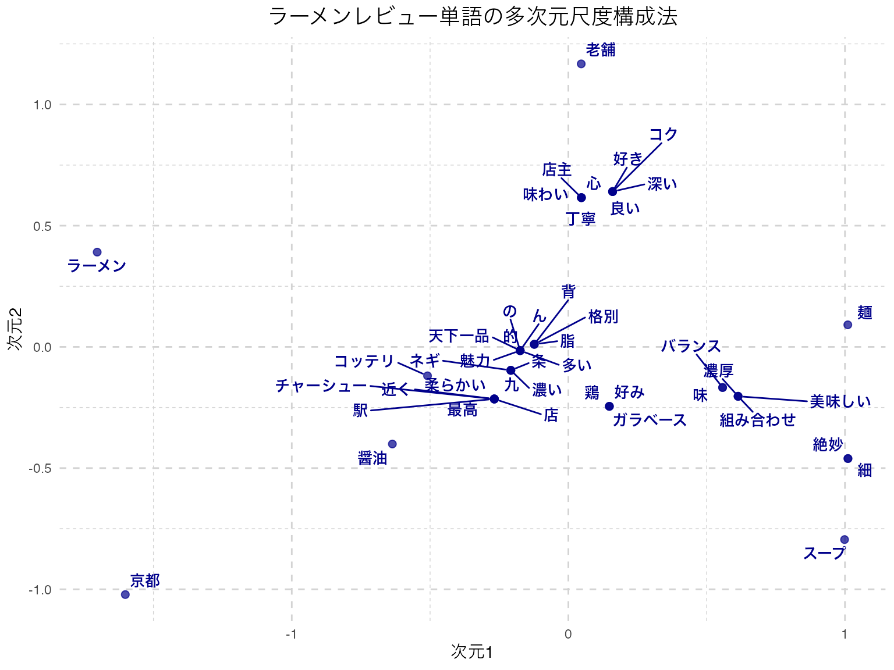
ここでプロットされているのは，単語同士の類似度が近いものは近くに，遠いものは遠くにプロットされる地図である。これをみると，「麺」と「スープ」や「組み合わせ」「バランス」といった言葉が近くに付置されており，関係が深そうなことが読み取れる。
ただし，「九条ネギ」が「九」と「条」に別れているように，機械的に分解することの限界もあり，こうした場合は辞書を変更したり，特定の単語・専門用語などを強制的に取り出すような工夫をする必要がある。形態素解析を経由したテキストマイニングは，多変量解析に入る前の事前クリーニングにかなりの労力を要することが少なくない。
また，今回は10件程度の例であったが，基本的にテキストマイニングは膨大なデータや学習された辞書をもちいることが主流になってきている。これは生成AIとの相性もよく(生成AIはすでに自然言語についてある程度学習済みのものとも言える)，形態素解析や統計モデルを経ないテキストマイニングがこれから主流になってくるかもしれない。
最後に偏相関行列を用いる統計モデルを紹介しておこう。
(ピアソンの)相関行列は多くの線形モデルで多用されているが，変数\(X\)と\(Y\)の背後に，両者に影響する\(Z\)がある場合，見掛け上相関が高くなっているが，\(Z\)の影響を除外する(統計的に統制する)とそれほど相関が高くない，ということもあり得る。
この統計的に統制するというのは，\(X\)を\(Z\)で回帰して得られた残差\(R_x\)と，\(Y\)を\(Z\)で回帰して得られた残差\(R_y\)との相関であり，偏相関と呼ばれる。この相関の方が，本来的な関係を捉えていると言えるかもしれない。ここでは\(X,Y\)の2変数の例であったが，多変量の相関行列に関しても同様に当該2変数以外の変数で(重)回帰をし，その残差同士の相関を出した偏相関行列を考えることができる。これは逐一回帰分析をしなくても，次のような行列演算で一括して求めることができる。
相関行列を\(\mathbf{R}\)とすると，偏相関行列\(\mathbf{P}\)の要素は次の式で計算される： \[p_{ij} = -\frac{r^{ij}}{\sqrt{r^{ii} r^{jj}}}\]
ここで\(r^{ij}\)は相関行列の逆行列\(\mathbf{R}^{-1}\)の\((i,j)\)要素である。
さて，因子分析は相関行列から始めて関係の強いところを因子にまとめるというイメージだが，この手順を反転させて，偏相関行列の関係の弱いところの繋がりをカットする，という方法で，純粋な変数間関係だけ残るようにして可視化する方法がある。
この分析方法はグラフィカルモデリングと呼ばれる。量的な変数の場合は偏相関行列から，質的な変数の場合でも多元分割行列から，変数間の条件付き独立性を検証する方法で進められる。可視化の手段として，変数間関係をノードとエッジからなるネットワークで表現することから，最近ではネットワーク分析と呼ばれることもある。
心理学においては，因子が心理学的構成概念だと捉えられることが多い。しかし，構成概念とはそもそも単体でそこに「ある」ものではなく，いろいろな現象の総合的な全体である，というシステム論的な観点によれば，このネットワーク分析的なアプローチの方が適しているかもしれない。この理論的な体系と方法論の合体については，アデラ＝マリア et al. ([2022] 2024) を参考にしてほしい。
具体的な例で見てみよう。 例えば，性格検査のBig5データを使って相関行列と，その偏相関行列を見てみよう。
pacman::p_load(psych, corrplot, RColorBrewer)
# Big5性格データの読み込み（最初の25項目のみ使用）
bfi <- psych::bfi[, 1:25]
bfi_clean <- na.omit(bfi) # 欠損値を除去
# 1. 相関行列の計算
cor_matrix <- cor(bfi_clean)
# 2. 偏相関行列の計算（行列演算で実行）
R_inv <- solve(cor_matrix) # 相関行列の逆行列を計算
# 偏相関行列の各要素を計算
partial_cor_matrix <- matrix(0, nrow = nrow(R_inv), ncol = ncol(R_inv))
for(i in 1:nrow(R_inv)) {
for(j in 1:ncol(R_inv)) {
if(i != j) {
# 偏相関の公式: p_ij = -r^ij / sqrt(r^ii * r^jj)
partial_cor_matrix[i, j] <- -R_inv[i, j] / sqrt(R_inv[i, i] * R_inv[j, j])
}
}
}
# 対角要素は1に設定
diag(partial_cor_matrix) <- 1
# 行名・列名を設定
rownames(partial_cor_matrix) <- rownames(cor_matrix)
colnames(partial_cor_matrix) <- colnames(cor_matrix)# 3. 相関行列と偏相関行列の比較表示
par(mfrow = c(1, 2))
# 相関行列ヒートマップ
corrplot(cor_matrix,
method = "color",
order = "alphabet", # 同じ順序で比較
tl.cex = 0.6,
tl.col = "black",
col = brewer.pal(n = 8, name = "RdYlBu"),
title = "相関行列",
mar = c(0, 0, 2, 0),
cl.pos = "n") # カラーバーを非表示
# 偏相関行列ヒートマップ
corrplot(partial_cor_matrix,
method = "color", # 色で偏相関の強さを表示
order = "alphabet", # アルファベット順で表示（相関行列と同じ順序で比較）
tl.cex = 0.6, # 変数名のテキストサイズ
tl.col = "black", # 変数名の色
col = brewer.pal(n = 8, name = "RdYlBu"), # 青-黄-赤のカラーパレット
title = "偏相関行列", # 図のタイトル
mar = c(0, 0, 2, 0)) # 図の余白設定（下，左，上，右）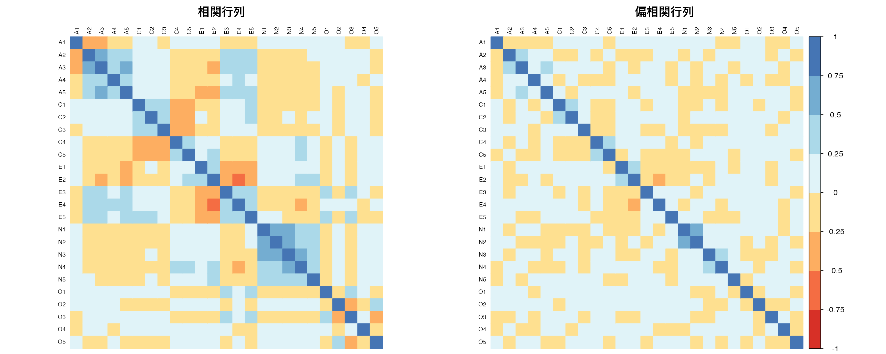
par(mfrow = c(1, 1)) #環境を元に戻す相関行列と偏相関行列を並べてみると，所々相関のパターンが違うところが見える。
さて，ネットワークの表現をするには相関行列でも偏相関行列でも構わないのだが，一応ここでは偏相関行列を用いたネットワークを見てみよう。
ここではqgraphパッケージを用いている。 この関数のオプションとして，推定にglassoを用いているが，ガウシアングラフィカルモデルの一種で，L1正則化(lasso)を行い重要でない変数間の関係を0にするモデルである。これでBICを基準に不要なパスをカットして描画される。描画のレイアウトオプションはspringだが，これはなるべく自然な配置にしてくれる方法であり，他にもいろいろなオプションがあり得る。
pacman::p_load(qgraph)
BICgraph <- qgraph(
partial_cor_matrix, # 偏相関行列を入力データとして使用
graph = "glasso",
sampleSize = nrow(bfi), # サンプルサイズを指定（統計的有意性の判定に使用）
tuning = 0, # 正則化パラメータ（0=BIC基準で自動選択、大きいほどスパース）
layout = "spring",
title = "BIC", # グラフのタイトル
threshold = TRUE, # 弱い結合を除去してスパースなネットワークを作成
details = TRUE # 詳細な出力情報を表示
)Note: Network with lowest lambda selected as best network: assumption of sparsity might be violated.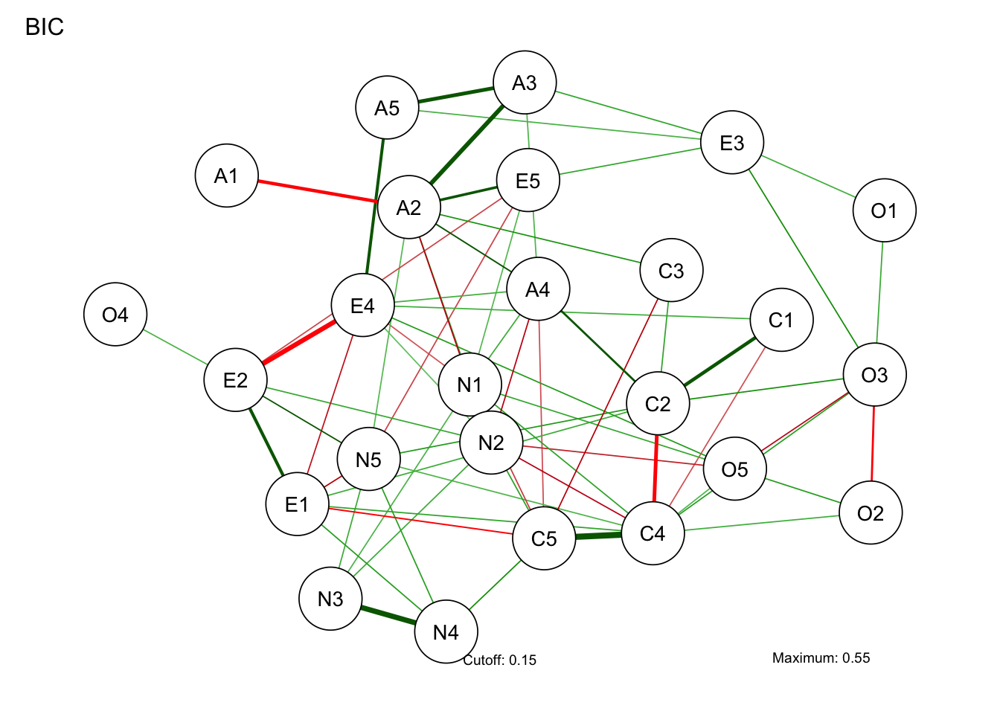
さて，ネットワーク分析は「これが因子！」のような特定の何かに帰着するのではなく，全体像をそのまま見て捉えることが特徴的である。しかしそれでは何がなんだか分かりにくいということもあろう。ということで，ネットワークの中心がどこにあるのか，どのノードとどのノードの結びつきが強いのか，といったことを指標とする。これらは中心性指数と呼ばれ，次のコードで可視化される。
centralityPlot(
list(BIC = BICgraph),
include = "all"
)Warning: Removed 1 row containing missing values or values outside the scale range
(`geom_point()`).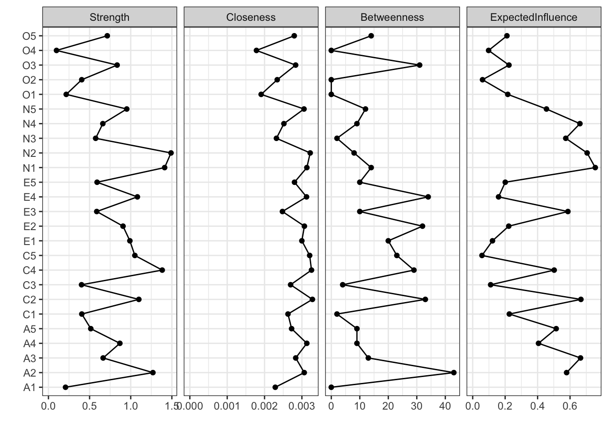
ここで示されている各指標の意味は次のとおりである。
ネットワークモデルは，推定法もいろいろ工夫されているし，動的なモデル，時系列モデルなども扱える。今後の発展が楽しみな分析方法の一つと言えるだろう。
この章で紹介した多変量解析手法（クラスター分析，多次元尺度構成法，ネットワーク分析）を使って，以下の課題に取り組んでみよう。
100人の消費者の購買行動データ（5つの商品カテゴリへの支出額）を用いて，階層的クラスター分析とk-means法の両方でクラスター分析を実行し，結果を比較せよ。画面には一部しか表示しておらず，全体データはこちらconsumer_data.csvからダウンロード可能です。
消費者ID 食品 衣料品 書籍 電子機器 旅行
1 C001 7.159287 2.6886403 0.7544844 1.4639778 2.8421412
2 C002 7.654734 2.5539177 0.1000000 0.8720764 1.6853630
3 C003 10.338062 1.9380883 1.5028693 0.1656465 0.1134270
4 C004 8.105763 1.6940373 0.6453996 1.1958188 0.1823988
5 C005 8.193932 1.6195290 0.6559957 2.2351973 0.1000000
6 C006 10.572597 1.3052930 1.5127857 1.0397224 1.3629122
7 C007 8.691374 1.7920827 0.8576135 1.9863715 0.2458933
8 C008 6.102408 0.7346036 0.3896411 0.2056938 2.8255001
9 C009 6.969721 4.1689560 1.0906517 1.4555504 4.5201307
10 C010 7.331507 3.2079620 0.9305543 1.9155258 0.4555634分析手順: 1. データを読み込み，標準化を行う 2. 階層的クラスター分析（ウォード法）でデンドログラムを作成 3. k-means法で3クラスターに分類 4. 両手法の結果を比較し，各クラスターの特徴を解釈する
日本の主要10都市間の類似度評定データを用いて，多次元尺度構成法で都市の関係性を2次元平面上に可視化せよ。データはこちらcity_similarity.csvからダウンロード可能です。
東京 大阪 名古屋 札幌 仙台
東京 10 6 7 2 5
大阪 6 10 6 2 3
名古屋 7 6 10 2 4
札幌 2 2 2 10 7
仙台 5 3 4 7 10分析手順: 1. 類似度データを距離行列に変換する 2. 古典的MDSで2次元解を求める 3. ggplotとggrepelで結果を可視化する 4. 都市の配置パターンから地理的・文化的特徴を考察する
性格特性の下位尺度間の関係をネットワーク分析で可視化し，中心性指標を用いて重要な特性を特定せよ。データはこちらpersonality_data.csvからダウンロード可能です。
参加者ID 外向性1 外向性2 協調性1 協調性2 誠実性1 誠実性2 神経症傾向1
1 P001 2 2 4 4 2 2 1
2 P002 5 5 2 3 3 2 5
3 P003 5 5 4 4 4 5 2
4 P004 5 4 2 2 6 5 2
5 P005 3 6 4 5 6 7 3
6 P006 3 4 3 4 5 5 6
7 P007 1 2 5 5 6 6 1
8 P008 5 7 4 4 7 7 7
9 P009 2 1 3 4 7 7 1
10 P010 4 6 4 5 3 2 4
神経症傾向2 開放性1 開放性2
1 1 1 1
2 3 3 4
3 2 1 3
4 2 3 4
5 6 3 4
6 4 5 5
7 4 4 5
8 7 5 3
9 4 4 5
10 4 2 1分析手順: 1. データを読み込み，下位尺度間の偏相関行列を計算する 2. glasso法でスパースなネットワークを推定する 3. 中心性指標（強度，近接性，媒介性）を算出する 4. 最も中心的な特性と周辺的な特性を特定し，性格構造について考察する
バグがあるのになぜ修正しないのか，と思われるかもしれない。ward.DはRのバージョン3.0.3以前まで用いられていたが，ユーザからの指摘で正しく分散が計算されていないことが発覚。Rの基本関数に誤りがあったことを認め，戒めとするために元のコードを残している。Rはフリーでオープンなソフトウェアであり，無償ではあるが，フリーだからといっていけないのではなく，こうした自浄作用があることを示すための措置と思われる。ちなみに筆者が以前プロプライエタリな統計ソフトを使っていた時にもおかしな挙動を発見したことがある。メーカに指摘すると「次のバージョンでは修正されているのでそちらを新たに購入しろ」という回答であったため，そのソフトウェアから決別することにした。科学的営みにおいて，有償サポートがあることが真実を担保しない例である。↩︎
自己組織化マップ（SOM）とは，Kohonen Mapとも呼ばれる。フィンランドのKohonenによって開発された教師なし学習アルゴリズムの一種である。高次元データを2次元の格子上にマッピングし，データの構造を保持しながら可視化する手法である。↩︎
トークンとは，機械学習においてテキストを構成する最小の意味単位であり，必ずしも形態素に限らず類似性をもとに区切られた数値ベクトルである。↩︎
RMecabのGithubサイトhttps://github.com/IshidaMotohiro/RMeCab↩︎
Mecabの公式サイトhttp://taku910.github.io/mecab/↩︎
RMecabのGithubサイトhttps://github.com/IshidaMotohiro/RMeCab↩︎
gibasaの解説https://zenn.dev/paithiov909/articles/gibasa-intro↩︎